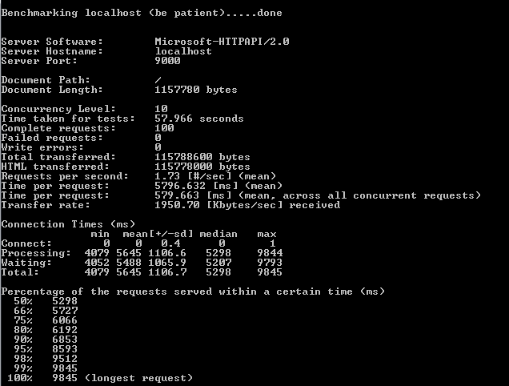

Node.js
When you do want to use it
- Anton Whalley / @antonwhalleyslides @ https://github.com/oisin/nodejsdublin
Sweet Spots
- Near Real Time communication systems
- High End Single Page Applications
- Messaging Systems (We are here!)
- More...
Example Message System

Focus Area - Middleware

Problemo?
Request Response Architecture (Wait for all messages)
Verbose nature of data and definition (XML)
Tooling support
Focus on contracts not functionality
Aunt Sally
.Net and Node (Not versus)
Central Server makes two requests of 30000 cached objects on two backend servers
.Net servers used WCF/XML services parsed then served
.Node servers used streamed JSON buffered on the central server
It's really apples and oranges
Some Numbers for XML World
Some Numbers for JSON

Where node helps in messaging systems.
- Evented Architecture (Fire Now!)
- The data is the definition (JSON)
- Better Polyglotability
- No longer fitting a problem to an architecture
Node.js
When you don't want to.
- Oisín Hurley / @oisin
scale
non-blocking
event-driven
community
javascript
SCALE
In a system of no significant scale, basically anything works.
Scaling in the SMALL
Scaling in the LARGE
NO
small
Incremental improvement to a part of an app
Pick a spot where asynchrony suits - BAM
Accessible, immediate solution to early scaling problems
large
Any single technology is no help overall
It's data and applications specific
No silver bullet
Links
NON BLOCKING
Have lots of I/O? Non-blocking is usually good
But blocking I/O will have better throughput - if your server can handle it
Thread-per-request and leader-follower
YES
Links
EVENTED
Events yield performance in many cases
Sometimes threads are better for high currency
Mix up both
SEDA - event-driven application is a set of stages connected by queues
MAYBE
Links
COMMUNITY
Enthuastic community with solid core philosophy
Good time to be had reinventing to new norms
YES
Situational
Two Ruby devs and a deadline?
Batch system?
Realtime system?
CRUD web app?
Protein folding?